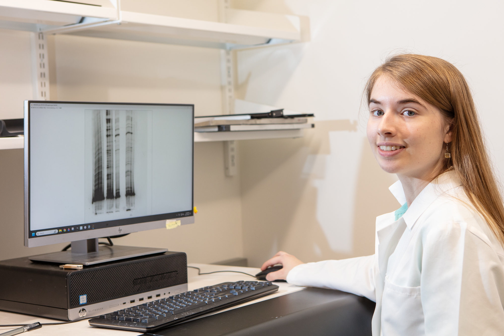
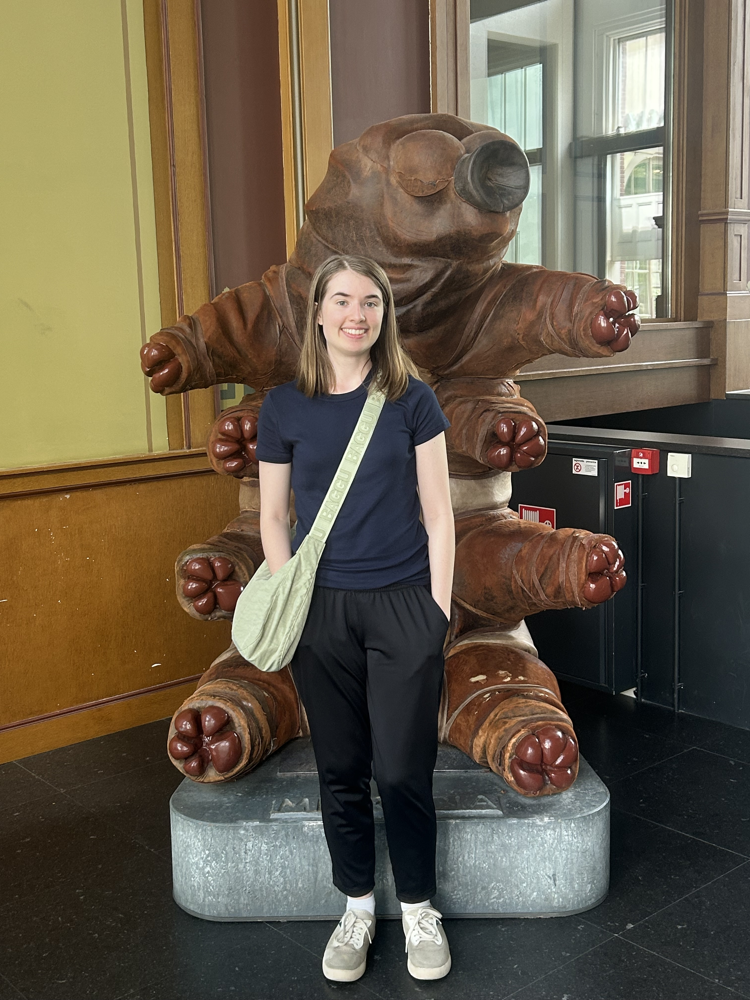

About
Research & academic journey

I'm a PhD graduate in Molecular Biophysics and Biochemistry from Yale where I worked on noncoding RNA structures. Before Yale, I studied Biological Engineering at MIT, where I first fell in love with macromolecular structures during a biochemistry class. I enjoy working at both the bench and the terminal, integrating multiple approaches for fundamental mechanistic insights.
Alongside research, I've enjoyed teaching at various levels, from elementary school students up to graduate students. I've also had the opportunity to teach internationally in South Africa and Thailand.
Beyond research and teaching, I make time to explore nature, spend time with friends, and serve at church.
Quick facts about me

At the Micropia museum in Amsterdam
Academic background
Ph.D., Molecular Biophysics & Biochemistry
Dissertation: “Computational and Experimental Investigations of Noncoding RNA Structures.”
Advisor: Anna Marie Pyle
B.S., Biological Engineering
Undergraduate research • Tania Baker • Protease biochemistry
Computational intern • Tanja Kortemme • Protein design
“If I had influence with the good fairy who is supposed to preside over the christening of all children, I should ask that her gift to each child in the world be a sense of wonder so indestructible that it would last throughout life.”
–Rachel Carson, The Sense of Wonder